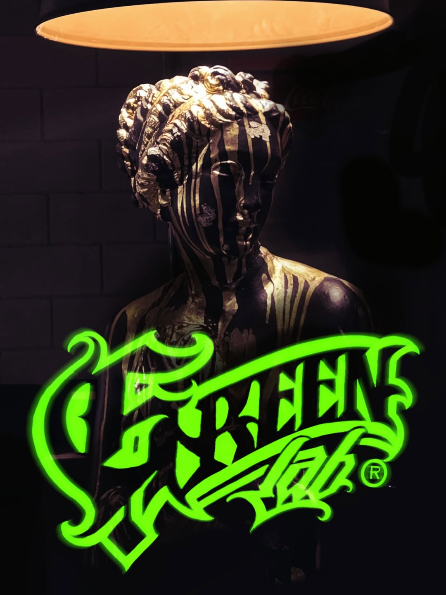
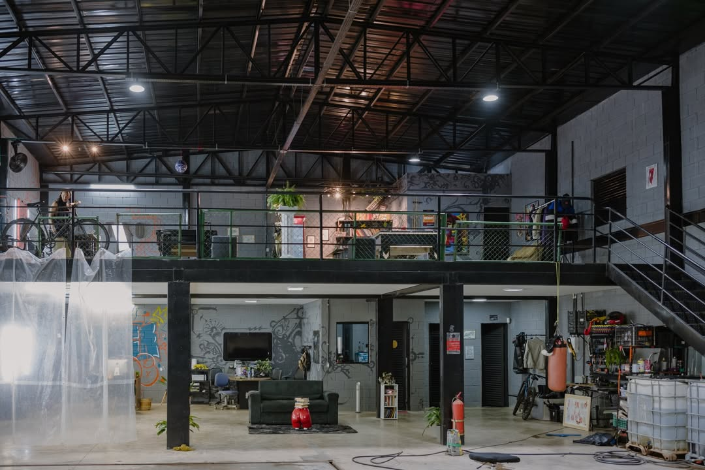
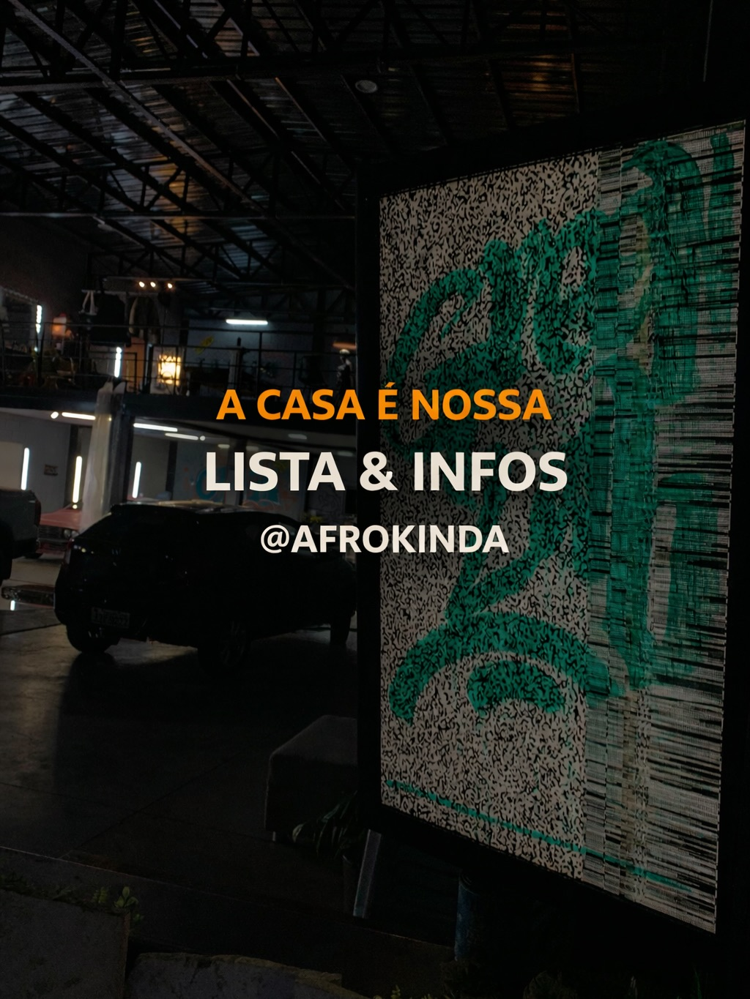
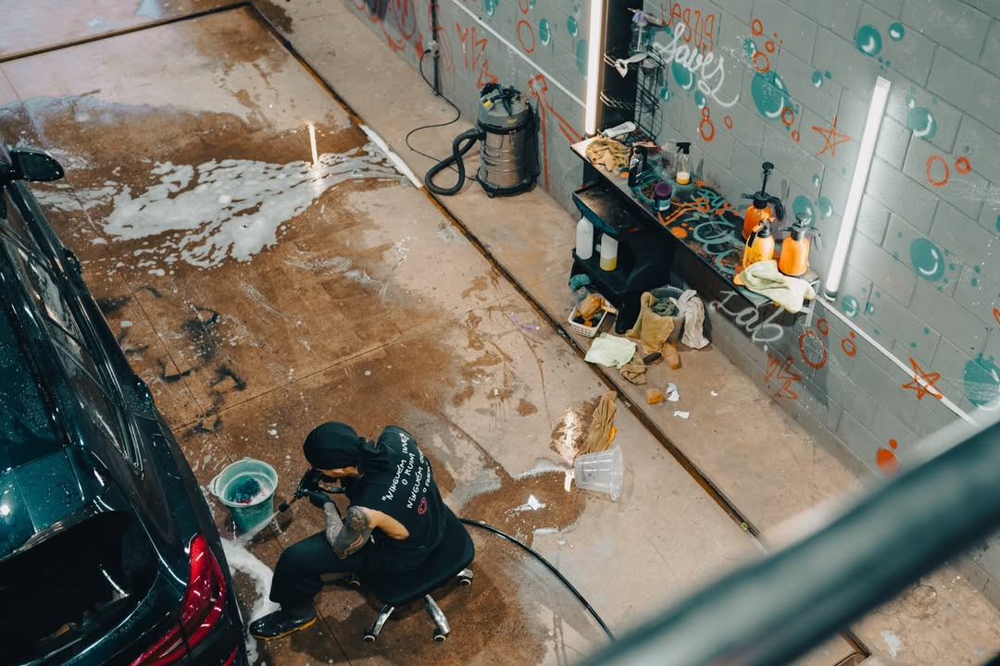
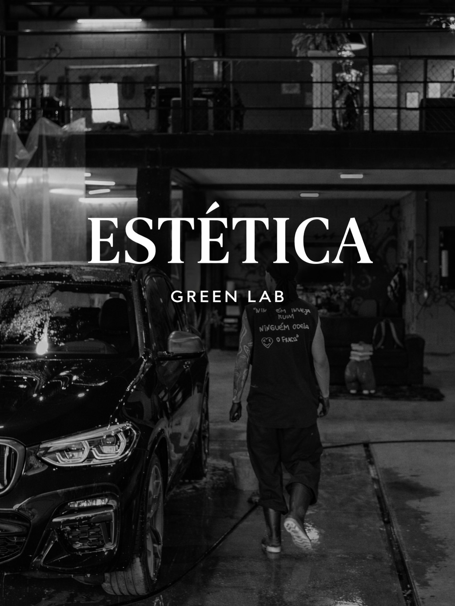
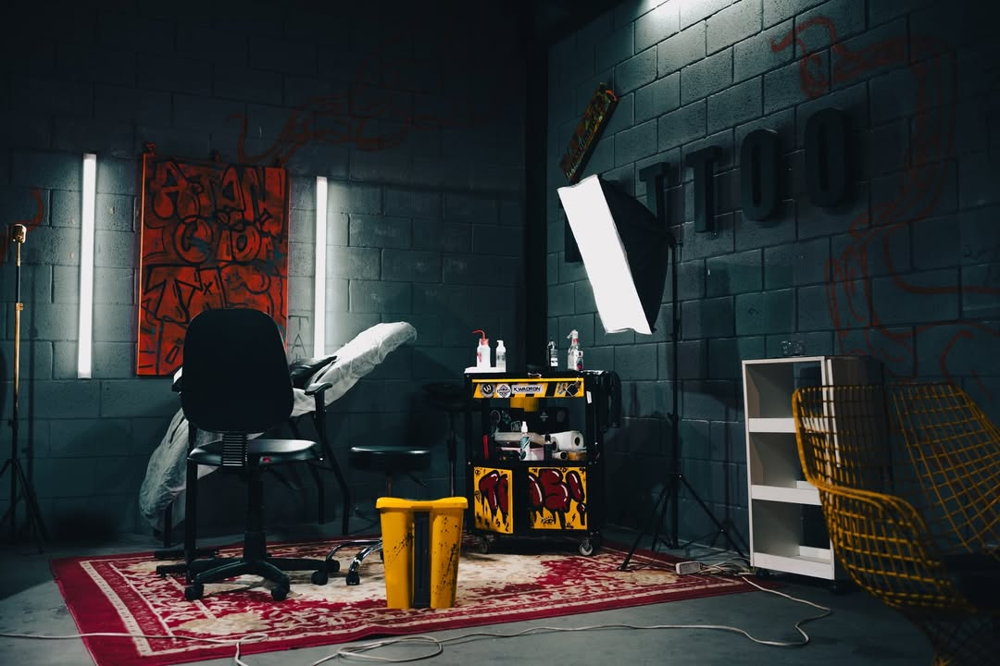
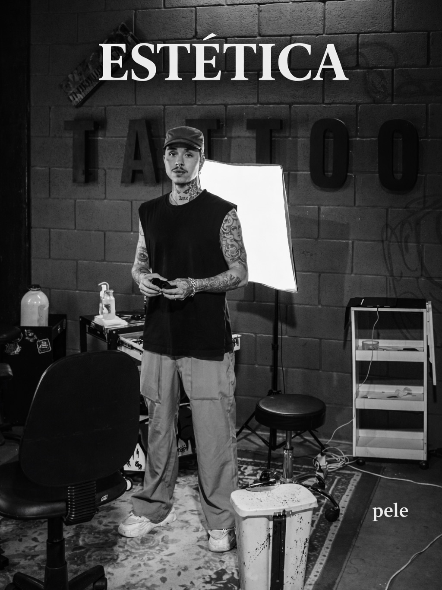
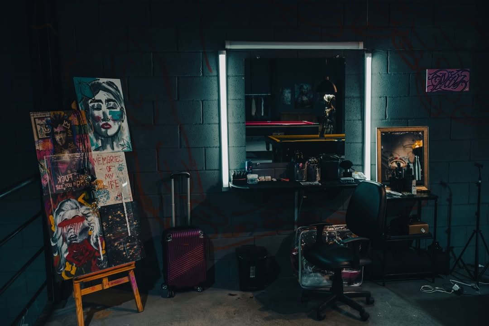
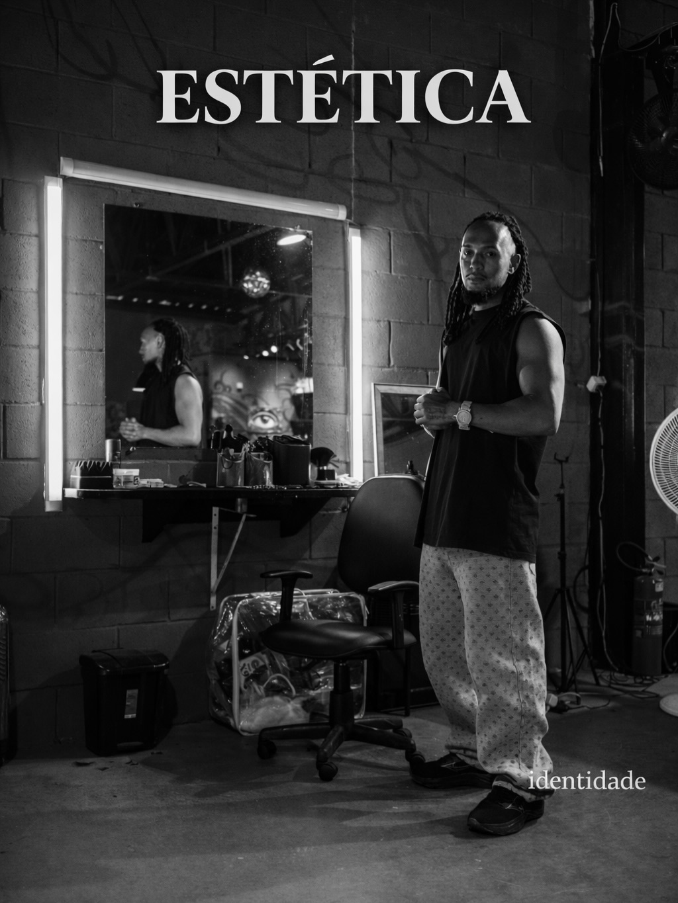

MURAL DO GALPÃO
greenLAB
A greenLab não é apenas um espaço físico; somos um ecossistema vivo. Uma sociedade de mentes criativas feita para abrigar, potencializar e conectar o topo da cultura, da estética e da identidade autêntica.

QUEM SOMOS
A greenLab nasceu da necessidade de criar um território livre para os nossos. Somos uma aliança de criadores, uma marca que bota o bloco gerencia o ambiente onde o topo da cultura urbana acontece.


DAMASIO Estética automotiva
Nós trazemos o requinte avançado para o centro do concreto industrial da greenLab. Tratamentos de pintura de elite, correção de verniz milimétrica e vitrificação de alta performance. Não limpamos carros; blindamos o seu patrimônio com técnicas de simetria que beiram a obsessão.
AGENDAR VIA WHATSAPP


Yellow.Ink
nosso estúdio é um santuário para quem entende que tatuagem é identidade, não adereço. Do traço fino e cirúrgico à agressividade do blackwork, cada sessão aqui é um ritual de afirmação.
AGENDAR VIA WHATSAPP


BROOKLYN AFRO
De tranças nagô de impacto a fades milimétricos, cada atendimento é um compromisso com o topo do seu visual. Deixe que os especialistas cuidem do seu visual com quem entende o corre e o peso da nossa cultura.
ATENDIMENTO VIA WPP